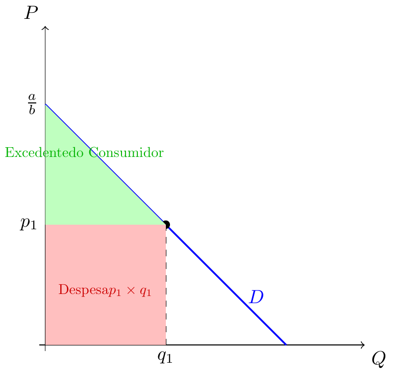
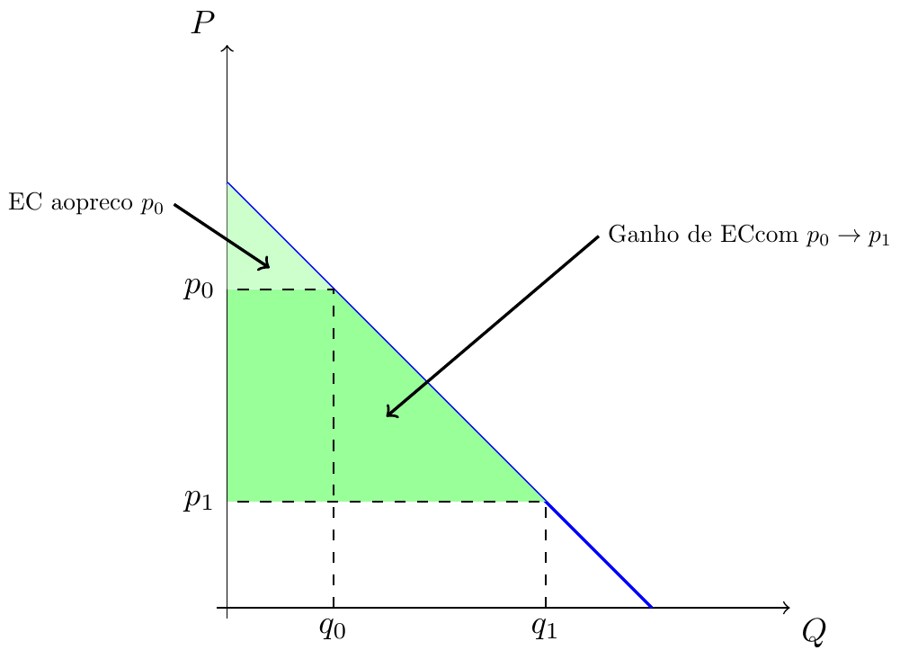

Microeconomia
Procura: Agregada, Linear. Excedente do Consumidor
Recapitulação 🔄
Nas aulas anteriores:
- Restrição Orçamental e Preferências
- Função de Utilidade — natureza ordinal
- 1.ª Lei de Gossen: utilidade marginal decrescente
- 2.ª Lei de Gossen: \(|TMS| = p_x/p_y\) no óptimo
- Procura Individual: via preço-consumo
Hoje: Procura de mercado, modelos lineares e excedente do consumidor
Procura de Mercado (Agregada) 📊
Da Individual à de Mercado
- Da determinação do óptimo deduz-se a procura individual
- Por adição horizontal das procuras individuais, obtém-se a procura de mercado:
\[Q^D(P) = \sum_{i=1}^{n} Q^D_i(P)\]
- A procura de mercado herda todas as propriedades das procuras individuais.
Agregação Horizontal

- Para \(P > 3\): só \(D_1\) activa — \(Q = 4 - P\)
- Para \(P \leq 3\): ambas activas — \(Q = 10 - 3P\) (cotovelo em \(P = 3\))
Propriedades da Procura de Mercado
A procura de mercado herda as propriedades individuais:
- Inclinação negativa: ao subir o preço, diminui a quantidade — Lei da Procura
- Desloca para fora se: rendimento aumenta (bem normal), preço de substituto sobe, preço de complemento desce
- Desloca para dentro se: rendimento diminui (bem normal), preço de substituto desce, preço de complemento sobe
Modelos Lineares para a Procura 📐
Porquê Modelos Lineares?
Para simplificação de cálculo, usa-se frequentemente a procura linear:
- Forma directa (quantidade em função do preço): \[Q = a - b \cdot P\]
- Forma inversa (preço em função da quantidade): \[P = \frac{a}{b} - \frac{1}{b} Q\]
Warning
Qualquer que seja a forma, representa-se sempre no espaço \((Q, P)\), com \(P\) no eixo vertical — convenção de Marshall (1895).
Interpretação do Modelo Linear

- \(\frac{a}{b}\): preço máximo (choke price) — acima disto \(Q^D = 0\)
- \(a\): quantidade máxima — ao preço zero
- Ao preço \(p_1\), a quantidade óptima procurada é \(q_1\)
Deslocações da Procura Linear

Excedente do Consumidor 💰
Preço de Reserva
Preço de Reserva
O preço de reserva é o máximo que o consumidor está disposto a pagar por uma unidade adicional do bem. É dado pela curva de procura inversa avaliada na quantidade em causa.
Da 1.ª Lei de Gossen: à medida que se consome mais, a \(Umg\) decresce → o preço de reserva também decresce.
A curva de procura é a curva dos preços de reserva marginais.
Excedente do Consumidor
Excedente do Consumidor
Por unidade transacionada, é a diferença entre o preço de reserva e o preço de mercado efectivamente pago.
O excedente total é a área abaixo da curva de procura e acima do preço de mercado.
Excedente do Consumidor — Gráfico

Cálculo do Excedente do Consumidor
Para procura inversa \(P = \dfrac{a}{b} - \dfrac{1}{b} Q\), ao preço \(p_1\):
\[EC = \frac{1}{2} \times q_1 \times \left(\frac{a}{b} - p_1\right)\]
Exemplo: \(P = 10 - 2Q\), preço de mercado \(p = 4\).
- Quantidade: \(Q = \dfrac{10-4}{2} = 3\)
- \(EC = \dfrac{1}{2} \times 3 \times (10-4) = \dfrac{1}{2} \times 3 \times 6 = 9\)
Variação do Excedente com o Preço

Quando o preço desce de \(p_0\) para \(p_1\), o excedente do consumidor aumenta.
Exercícios ✏️
Exercício 1 (Escolha Múltipla)
A procura de mercado é \(Q^D = 120 - 4P\). Se o preço de mercado é \(P = 10\), qual é o excedente do consumidor?
(A) \(EC = 200\) \(\quad\) (B) \(EC = 800\) \(\quad\) (C) \(EC = 400\) \(\quad\) (D) \(EC = 1600\)
Resposta: (B)
Procura inversa: \(P = 30 - \tfrac{1}{4}Q\).
\(Q = 120 - 40 = 80\). Preço máximo: \(30\).
\(EC = \tfrac{1}{2} \times 80 \times (30-10) = \tfrac{1}{2} \times 80 \times 20 = 800\).
Exercício 2 (Escolha Múltipla)
Dois consumidores: \(Q_1^D = 8 - 2P\) e \(Q_2^D = 6 - P\). Qual é a procura de mercado para \(P \leq 4\)?
(A) \(Q^D = 14 - 3P\) \(\quad\) (B) \(Q^D = 14 - 2P\)
(C) \(Q^D = 6 - 3P\) \(\quad\) (D) \(Q^D = 8 - 3P\)
Resposta: (A)
Para \(P \leq 4\) (ambos activos): \(Q^D = (8-2P) + (6-P) = 14 - 3P\).
Para \(P \in (4, 6]\): só \(Q_2^D = 6-P\) activo. Para \(P > 6\): \(Q^D = 0\).
Exercício 3 (Desenvolvimento)
A procura de mercado de um bem é \(Q^D = 200 - 5P\).
a) Escreva a equação da procura inversa.
b) Se \(P = 20\), calcule a quantidade transacionada e o excedente do consumidor.
c) O preço desce para \(P = 10\). Qual o novo excedente? Qual o ganho para os consumidores?
Solução
a) \(P = 40 - \tfrac{Q}{5}\). Preço máximo: €40.
b) \(Q = 200 - 100 = 100\). \(EC = \tfrac{1}{2} \times 100 \times (40-20) = 1000\).
c) \(Q = 200 - 50 = 150\). \(EC = \tfrac{1}{2} \times 150 \times (40-10) = 2250\).
Ganho: \(2250 - 1000 = \mathbf{1250}\).

Microeconomia (Plano de Transição)